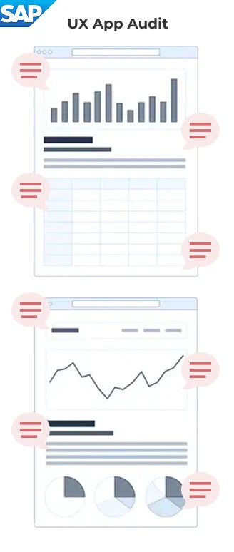
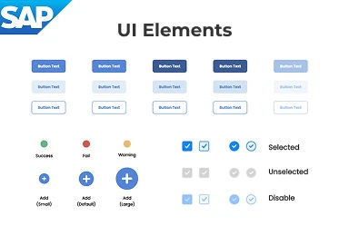
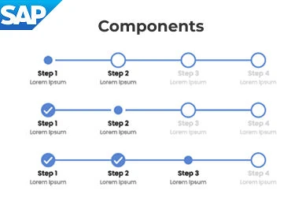
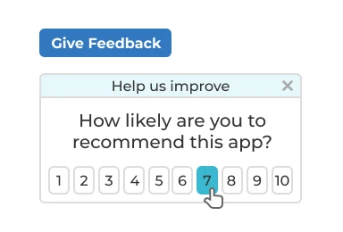
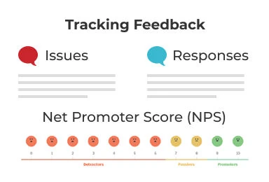
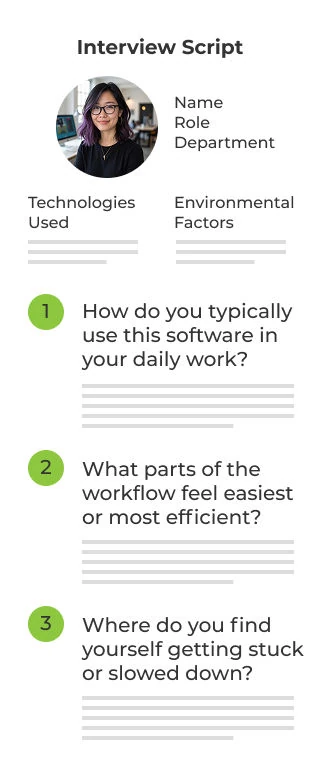

Case study · 4 min read
Making 40+ enterprise apps feel like one product
A shared design system and accessibility standard, checked before every release.
- Client
- Global corporation (SAP product team)
- My role
- Lead UX design consultant
- Timeline
- 2 fiscal years
- What changed
- One design system and accessibility standard across all 40+ apps

My approach
-
01Establish the foundation
- User experience audits
- Fiori style guide
- Fiori pattern library
-
02Create feedback loops
- In-app user feedback
- Closing the loop
- “Day in the life” interviews
-
04Get teams to own it
- Design thinking workshops
- Success stories
- Product health scorecard
Overview
The problem
The company ran more than 40 SAP apps, built by different teams at different times. Someone in the field might open four before lunch and relearn each layout, and nobody measured whether any of it worked.
The solution
I built one design system and one accessibility standard for all 40+ apps, with design checkpoints in the release process. The apps started to look and work alike, and design quality finally had numbers the business could see.
My part
I led the UX work: the usability testing and day-in-the-life interviews, the audits, the style guide, the release checkpoints, and the training. Product owners decided what shipped, developers built the components, and SAP’s managers backed the standard.
My approach
Establish the foundation
Jakob’s Law says people expect an app to work like the ones they use most. In the field, those were the company’s other apps. We reviewed them all, then built one style guide on SAP’s Fiori design language for everyone to work from.
Doing it in that order was the decision. A component library would have been quicker to show, but built before the review it would have been a fifth version of everything. Reviewing first meant the library started from what the teams already had.
User experience audits

Focus areas
- Visual hierarchy
- Form clarity
- Feedback & alerts
- Accessibility & contrast
- Error recovery
- Readability
- Button alignment
Fiori style guide

Unified standards
- Colors & typography
- Core UI elements
- Accessibility rules
Fiori pattern library

Reusable components
- Progress stepper
- Filter bar
- Dialog / Message box
Create feedback loops
We put feedback inside the apps, sat with people through their workday, and tracked where they got stuck.
In-app user feedback

Highlights
- Capture feedback at the moment of use
- Turn what people tell us into quick fixes
Closing the loop

Highlights
- Keep product teams and users talking
- Track feedback over time
“Day in the life” interviews

Focus areas
- Workflow optimization
- Pain points
- Workarounds
- What slows people down
- How information moves
- Collaboration gaps
- User expectations
Make quality routine
Design quality is decided between the moment a request comes in and the day the app ships. So UX and accessibility checks went in at every step along the way, and the standards started showing up in every release.
Cross-functional workflow for app feedback

Get teams to own it
The standard couldn’t depend on me being in the room. So the product health scorecard went to the teams, and each ran its own UX checks. That is most of why it kept working after I left.
Design thinking workshops

Focus areas
- Usability
- Accessibility
- Visual design
- Information architecture
- Performance
- Adoption
- Business alignment
Success stories

Benefits
- Build awareness
- Inspire teams
- Strengthen credibility
Product health scorecard

Benefits
- Let teams run their own UX checks
- Identify areas to improve
The impact
How I measured this
How each figure above was counted, over what period, and what it cannot tell you.
- Design to development, about a third less time
- From the team’s work tracker: the time from a design being marked ready to development starting on it, averaged per story. It compares the two quarters before the shared library with the two quarters after it was in use. Story size was not normalized, so this is a trend across many stories, not a saving on any single one.
- UI defects in production, roughly half
- Production defects that QA tagged as UI (layout, labels, inconsistent components), counted per quarter. The drop followed the accessibility and design checkpoints going into the release process. Releases also got smaller over the same stretch, which helped.
- New-user training time, cut in half
- The training team’s figure: hours of instructor-led onboarding for a new field user, before and after the redesigned flows.
- NPS, up roughly 20 points
- The in-app survey the product team already ran each release, compared across several release cycles. Responses per release were modest, so the change is read across releases rather than from any one of them.
- Hundreds of one-offs, one small library
- An inventory of the interface components across the 40+ apps at the start, set against the shared library at the end.